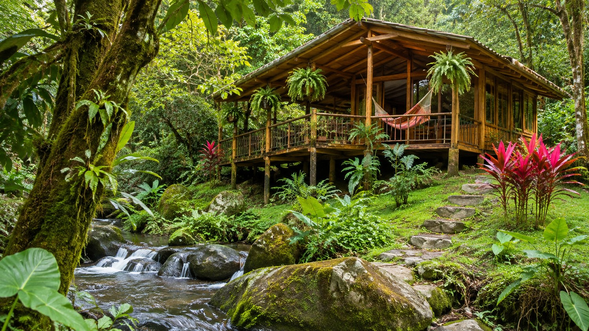
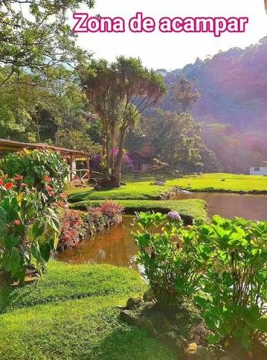
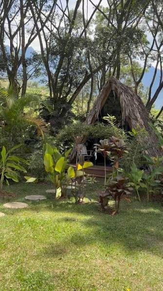
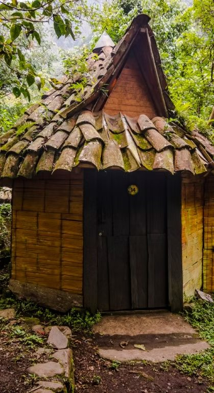
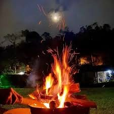
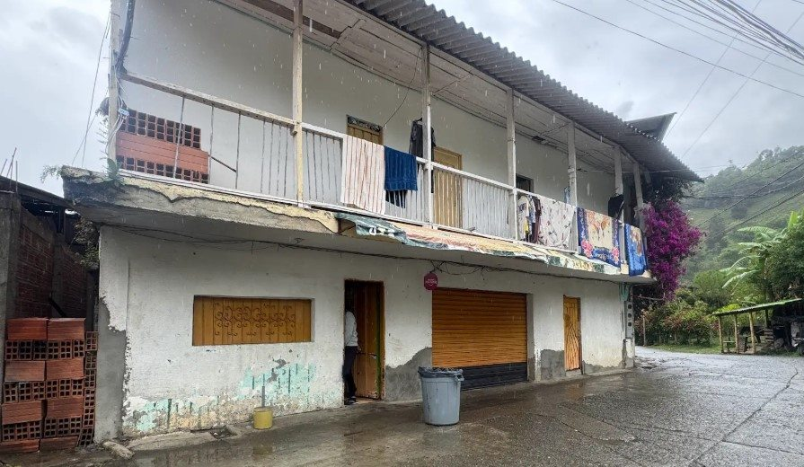

El Árbol de Agua
Una alternativa de hospedaje y ecoturismo en el sector de El Pato, Pance. La imagen es ilustrativa y no corresponde a una fotografía oficial del establecimiento.
Descansa entre árboles, comparte experiencias y disfruta el paisaje rural.
← Volver al inicioImágenes de espacios de camping, glamping, cabañas y alojamientos rurales compartidas para esta guía.

Una alternativa de hospedaje y ecoturismo en el sector de El Pato, Pance. La imagen es ilustrativa y no corresponde a una fotografía oficial del establecimiento.

Zona verde y espacio de camping. Confirma directamente servicios, tarifas y disponibilidad.

Alojamiento tipo glamping rodeado de vegetación. Consulta las condiciones directamente con el establecimiento.

Alternativa de alojamiento rural en un entorno natural. Verifica previamente disponibilidad y servicios.

Experiencia de fogata; únicamente en zonas autorizadas y bajo las normas de prevención de incendios.

Vivienda y hospedaje rural en Pance. La imagen no identifica por sí sola un establecimiento específico.